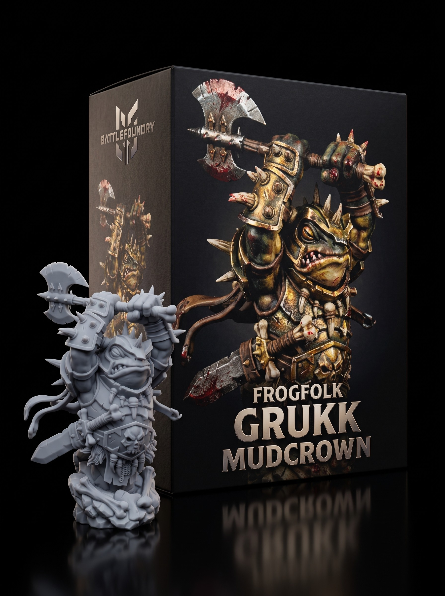

How to Paint Grimdark Steel for Tabletop Wargaming
August 08, 2026

Prime your miniature in matte black. Black primer creates instant deep shadows. Basecoat all armor plates with a dark gunmetal acrylic paint. Apply a heavy black wash across the metal to lock in contrast.
Let the wash dry completely. Load a stiff drybrush with a bright steel paint. Wipe almost all paint off the bristles onto a dry paper towel. Flick the brush lightly across the upper edges of the model. This creates sharp highlights on high-detail 3D printed miniatures without tedious edge highlighting.
Weathering turns fresh metal into battle-worn armor. Stipple a thin orange-brown paint into armor joints to mimic fresh rust. Dab dark brown oil wash on flat surfaces for streaking grime. Wipe away excess wash using a clean makeup sponge.
Seal the miniature with a matte varnish spray. Matte varnish kills glossy glare and protects your paint job during tabletop RPG games. Your free STL miniatures are ready for the gaming table.
Get free miniatures:
- Fantasy: https://cults3d.com/@BattleFoundry
- Scifi: https://cults3d.com/@BATTLEFOUNDRYSCIFI
- Grimdark: https://cults3d.com/@DREADWORKS
- Resin Statue: https://cults3d.com/@BlacksiteSyndicate